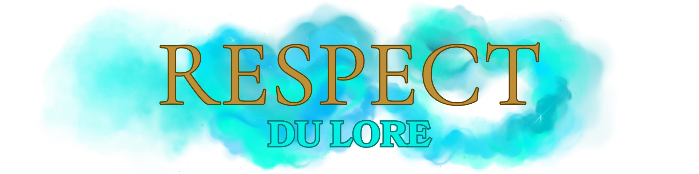

Accueil
Réglement Discord Discord
Lore du Serveur Respect du Lore
Le Jeu de Role Règles Générales RP Lexique RP Règles /me
Magies, Sorts et Dons Règles Sorts Et Comas Groupes Et Interactions
Réglement Discord Discord
Lore du Serveur Respect du Lore
Le Jeu de Role Règles Générales RP Lexique RP Règles /me
Magies, Sorts et Dons Règles Sorts Et Comas Groupes Et Interactions

Wizard’s Express est un serveur RP sérieux et immersif basé sur l’univers de Harry Potter. Ici, chaque joueur incarne un personnage qui vit dans ce monde magique, et il est donc essentiel de respecter le ton et les codes de l’univers. Tout comportement anachronique, incohérent ou troll nuira à l’immersion et sera sanctionné. L’objectif est que chacun puisse profiter d’une expérience de jeu cohérente, crédible et riche en histoires.
Le serveur se base sur l’univers de Harry Potter et s’inscrit dans sa continuité.
Les personnages, les sorts et les lieux doivent être cohérents avec le monde magique.
Pas de pouvoirs inventés ou de magie surpuissante.
Un seul personnage principal par joueur (sauf accord spécial du staff).
Les noms doivent être crédibles dans l’univers.
Les personnages ne peuvent pas être liés directement aux héros de la saga.
⚠️ 2 SEMAINES INGAME = 1 an